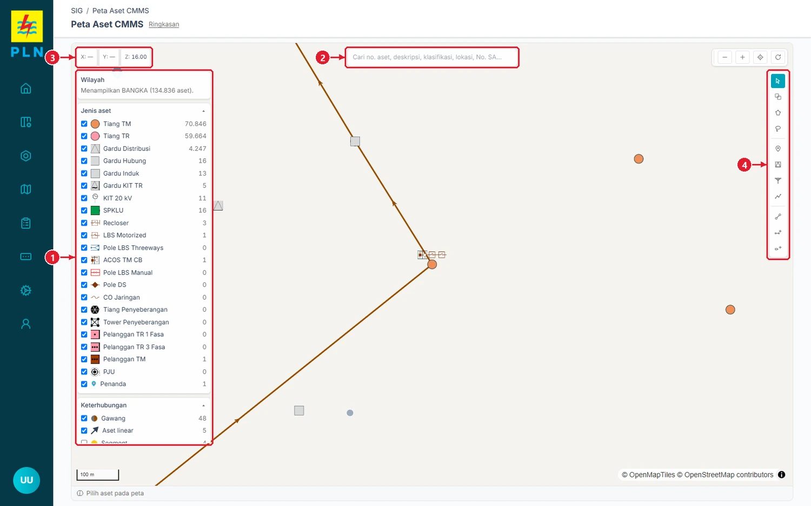
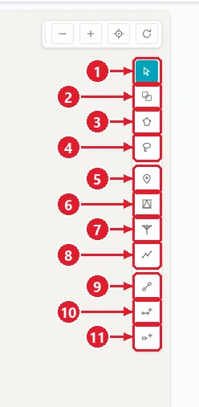
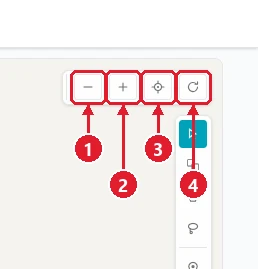

Buka menu SIG → Peta Aset CMMS (alamat /sigv2). Peta terbuka di wilayah site akun Anda.

- 1Panel kiri: Wilayah (wilayah yang sedang ditampilkan + jumlah aset), Jenis aset (centang untuk menampilkan/menyembunyikan; angka = jumlah), Keterhubungan (Gawang, Aset linear, Segment, Section, Penyulang), Warna penghantar, dan Hierarki.
- 2Kotak cari: tulisan abu-abunya "Cari no. aset, deskripsi, klasifikasi, lokasi, No. SA…". Lihat Bab 2.
- 3X / Y / Z: X = bujur dan Y = lintang di bawah ujung mouse; Z = tingkat zoom. Simbol aset tampil mulai zoom tertentu.
- 4Toolbar alat (lihat gambar berikut).

- 1Pilih: klik satu aset untuk melihat kartu & detailnya (alat bawaan).
- 2Pilih banyak: klik beberapa aset satu per satu.
- 3Pilih dengan poligon: klik titik-titik sudut, lalu Selesai.
- 4Pilih dengan laso: tahan dan seret melingkari aset.
- 5Tandai tempat: membuat penanda (marker). Bab 4.
- 6Buat lokasi: gardu, SPKLU, KIT. Bab 5.
- 7Buat aset: tiang, pelanggan, PJU. Bab 6.
- 8Buat aset linear: kabel/hantaran. Bab 8.
- 9Buat gawang. Bab 10.
- 10Buat segment. Bab 10.
- 11Buat section. Bab 10.

- 1Perkecil (zoom out).
- 2Perbesar (zoom in).
- 3Lokasi Saya.
- 4Atur ulang: kembali ke tampilan awal.
Tips
Alat 5–11 hanya muncul untuk akun yang boleh menulis (Creator/Admin). Akun Planner hanya melihat.
Menu kiri aplikasi (ikon di rel kiri) berisi kelompok menu. Yang dipakai di panduan ini:
| Kelompok | Menu | Alamat | Isi |
|---|---|---|---|
| Assets | Asset (T&D) | /assets/tnd | Daftar dan borang aset titik & linear |
| Assets | Locations | /assets/location | Daftar dan borang lokasi (gardu, penyulang, gudang) |
| Assets | Asset Approval (Modify) · Location Approval (Modify) | /assets/asset-approval · /assets/location-approval | Persetujuan perubahan lewat workflow CMMS |
| Master Data | Service Address | /master/service-address | Master alamat + koordinat |
| Master Data | Classifications · Meter Groups · Companies | /master/classification … | Kelas aset, grup meter, vendor |
| SIG | Peta Aset CMMS · Aset Belum Bertempat | /sigv2 · /sigv2/belum-bertempat | Pintu GIS |